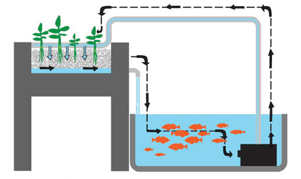

As **camas de cultivo** (ou growbeds) funcionam como o filtro biológico final do seu sistema. Com o tempo, é natural que ocorra o acúmulo de detritos: raízes antigas, folhas secas e o excesso de matéria orgânica que escapou dos filtros mecânicos.

Camas de cultivo: integrando plantas e filtragem biológica.ERRO FATAL: Nunca limpe todas as suas camas de cultivo ao mesmo tempo. É nelas que reside a maior parte das bactérias nitrificantes. Se você lavar tudo, causará um colapso no ciclo do nitrogênio, o que pode matar seus peixes por picos de amônia.
O Procedimento Correto
Para manter o equilíbrio, a limpeza deve ser feita de forma escalonada. Se você tem duas camas, limpe uma e espere de 30 a 45 dias (tempo da ciclagem) para limpar a próxima.
Passo a Passo da Limpeza:
- Interrompa o Fluxo: Desligue a bomba de água por alguns minutos.
- Remoção das Plantas: Retire as plantas com cuidado para não danificar excessivamente as raízes saudáveis.
- Lavagem da Mídia: Retire a argila expandida ou brita e lave-as em água corrente (preferencialmente sem cloro) para remover o lodo.
- Replantio: Recoloque as mídias e as plantas, garantindo que as raízes fiquem bem assentadas para receber o fluxo de água.
Ferramentas para Manejo de Cultivo
Facilite o replantio e a manutenção das suas camas:


A limpeza periódica evita o apodrecimento radicular e garante que a água retorne ao tanque de peixes sempre oxigenada e livre de toxinas. Lembre-se que um sistema limpo é o segredo de uma Aquaponia produtiva e livre de odores.